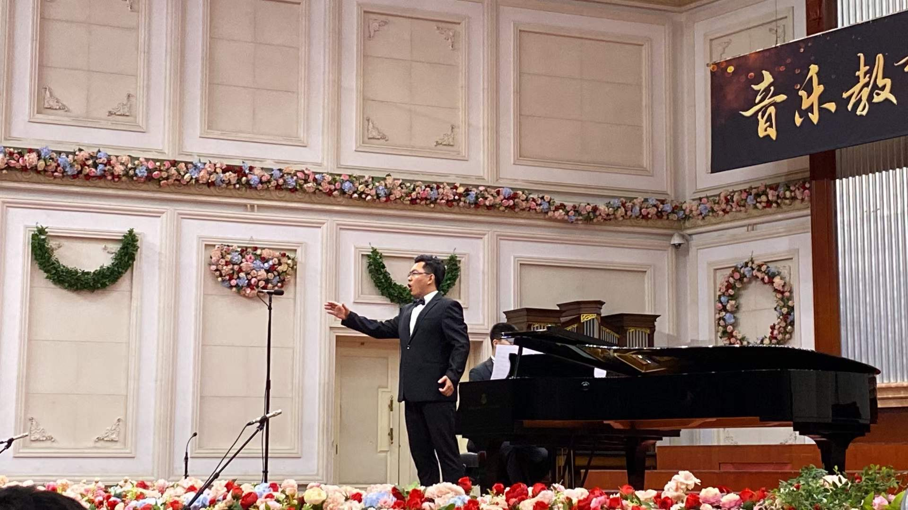
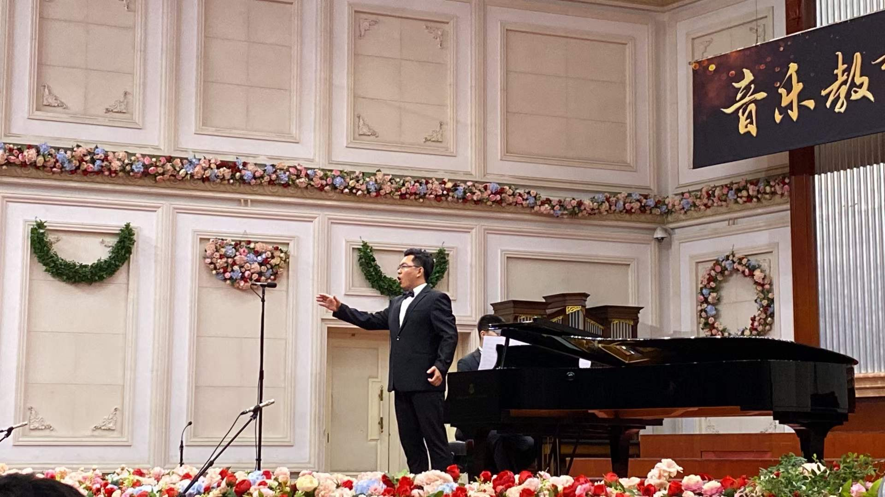

Maotong Yu
Baritone
Baritone
Maotong Yu is currently pursuing a Master of Music in Vocal Performance at the Lamont School of Music, University of Denver. She holds both a Bachelor’s and a Master’s degree in Music Education with a focus on vocal pedagogy from Tianjin Conservatory of Music. In the 2024–2025 academic year, she earned a Vocal Performance Certificate from Lamont School of Music.
On stage, Maotong Yu appeared in the title role of Puccini’s Gianni Schicchi at Lamont in 2025, and she is scheduled to perform the role of Dr. Falke in Johann Strauss II’s Die Fledermaus at Lamont in 2026. She studies voice under Matthew Plenk and collaborates closely with vocal coaches Dr. Beth Nielsen and Sahar Nouri, as well as conductors Sahar Nouri and Catherine Sailer, gaining extensive performance and collaborative experience.
Maotong Yu’s artistic philosophy emphasizes expressive vocalism and emotional resonance, striving to combine refined technical skill with deep musical understanding in every performance, bringing audiences a captivating and memorable musical experience.
| Date | Event | Location | Details |
|---|---|---|---|
| Jan 29, 2026 7:30pm - 9:00pm |
Winter Showcase | Newman Center for the Performing Arts, Hamilton Hall | View |
| Feb 3, 2026 7:30pm - 9:00pm |
Maotong Yu Elective Recital | Newman Center for the Performing Arts, Hamilton Hall | View |
| March 11, 2026 7:30pm - 9:00pm |
Graduate Voice Repertoire | Newman Center for the Performing Arts, Hamilton Hall | View |
| April 23, 2026 7:30pm - 9:30pm |
Lamont Opera Theatre presents “Die Fledermaus” | Newman Center for the Performing Arts, Gates Concert Hall | View |
| April 25, 2026 7:30pm - 9:30pm |
Lamont Opera Theatre presents “Die Fledermaus” | Newman Center for the Performing Arts, Gates Concert Hall | View |
| May 28, 2026 7:30pm - 9:00pm |
Opera Workshop | Newman Center for the Performing Arts, Hamilton Hall | View |
| May 29, 2026 7:30pm - 9:00pm |
Opera Workshop | Newman Center for the Performing Arts, Hamilton Hall | View |
 
